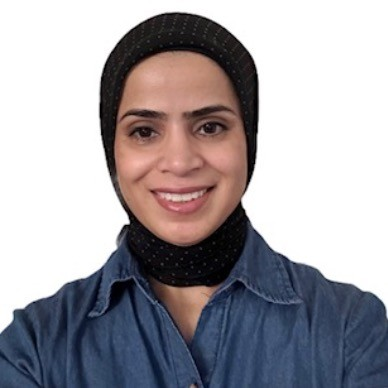

we now have UMSI Math Peer Tutors available for both SI and SIADS courses as well as for general math related support!
a tutor helping a student study for her upcoming exam
We offer peer math tutoring for the following subjects:
Linear algebra
Statistics
General Math related course support
We also offer tutoring in MADS for the following subjects:
Linear algebra
Statistics
General Math related course support
Please see the tutor biographies below for course-specific support.
Our Math peer tutors
Rahat Naseem

an image of peer tutor Rahat Naseem
I am here to support you with algebra, statistics, and any math-related questions you have. I am passionate about helping students overcome math anxiety by encouraging a shift from a fixed mindset ("I'm not good at math") to a growth mindset ("I can learn and improve in math"). With my experience in linear algebra, calculus, and a variety of other math topics, I can help you tackle homework, clarify concepts, and prepare for exams. Additionally, I can also assist with SI-425 and SI-370. My goal is to make math more accessible and enjoyable, and I’m excited to help you succeed and reach your academic goals.
I’m Ayush Shah, and I’m currently pursuing the Big Data Track here at UMSI. With experience as a peer tutor during my undergraduate studies, I have developed strong skills in data analysis and visualization, and I’m passionate about applying these skills to the sports domain. My expertise lies in interpreting complex datasets and deriving actionable insights, particularly in sports analytics. In my free time, I follow a wide range of sports, including soccer, F1, tennis, and have recently become interested in American football.
Hey there! I'm Nuzhat – Your Math Peer Tutor. I’m a second-year MSI student in the Big Data Track, and during my undergrad in Industrial Engineering, I took a bunch of math credits. I’m excited to help you with all things math! Whether it’s algebra, calculus, or stats, I’ve got six years of tutoring experience breaking down tricky concepts and making them easier to understand. If you’re stuck on homework, prepping for an exam, or just want to brush up on some skills, I’m here to help. You can book a session with your queries, and we’ll take it from there!
Hi! My name is Emily and I am a first-year MADS student enjoying all of the opportunities our program has to offer. I got started with MADS shortly after graduating from Purdue University in Indianapolis with a degree in pure mathematics. I love to talk math and have expertise in subjects ranging from statistics and linear algebra to calculus and abstract number theory. Outside of that, I enjoy running, trying out new recipes, and spending time outdoors. I am so excited to get to know you and support you with anything math-related!